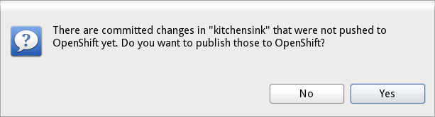

< Hibernate Tools Maven Tools >
Connection wizard |
|
| False 'Invalid credentials' error |
If you have typed in a bad host name or your ~/.openshift/express.conf settings were wrong you would get an "Invalid credentials" error instead of information on the host not being reachable. This is now fixed. Releated to this was that rhc tools version 1.4.7 generated a different format for host in express.conf which caused the tools to parse the host wrongly and you thus got the "Invalid credentials" error. JBoss Tools have been fixed to handle this new format but newer version of rhc tools have also been fixed to use the previous format making both old and new tools compatible again. |
Embedding wizard |
|
| MySQL and PostgreSQL | Historically OpenShift did not allow users to users to use a mysql and a Postgres database at the same time. This restriction was lifted some weeks ago and we now upgraded the tooling to allow that, too. |
Server adapter |
|
| Better change detection |
The OpenShift server adpter keeps track of your local changes and tells you if there are any that you can publish to OpenShift. Previously this tracking was only done against 'origin' remote and only tracking if there were changes to previously committed files that had not been pushed yet. This meant the dialog could be misleading/unprecise to the user. Now OpenShift Tools will check against the proper remote (in case it is not 'origin') and do a fetch do be able to do a proper check if there really are changes locally compared to what is on the remote OpenShift.  |